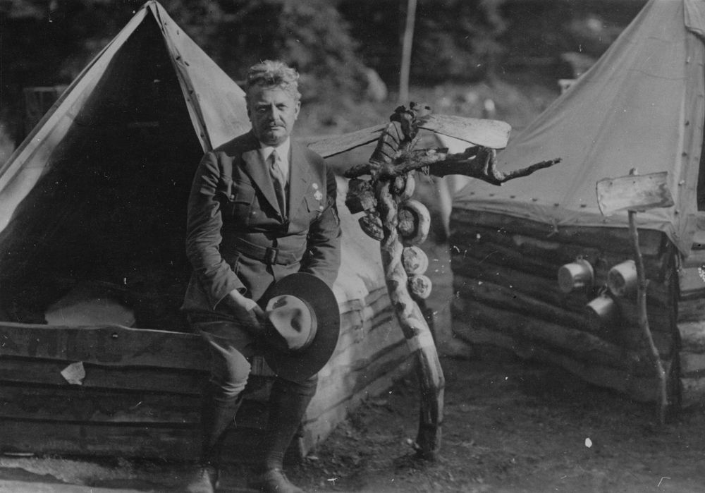
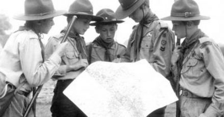

Skauting se v Česku objevil v roce 1911, již čtyři roky po vzniku skautingu v Anglii.
Za zakladatele bývá považován středoškolský profesor a první náčelník skautské organizace
Antonín Benjamin Svojsík. Kromě klasického skautingu dle světového náčelníka Roberta Baden-Powella
měly výrazný vliv na podobu českého skautingu i myšlenky amerického spisovatele a
zálesáka Ernesta Thompsona Setona.

Antonín Benjamin Svojsík
Během 20. století Junák – český skaut naráží na mnoho překážek při své činnosti. Zpočátku musí překonat 1. světovou válku. Skauti se aktivně účastní při zakládání republiky. V prvních dnech a týdnech svobody a nezávislosti se do služeb československé vlády a jejích orgánů dali čeští skauti, kteří zaručovali spolehlivé a rychlé dodávání listovních zásilek mezi úřady. Vznikají tak první známky s tématikou skautingu na světě.
Poprvé je organizace zrušena rozhodnutím K. H. Franka z 28. října 1940, kterému předchází rozehnání a zákazy letních táborů. Během druhé světové války mnoho skautů hájí myšlenky skautingu v ilegálním odboji či za hranicemi protektorátu. Sedm stovek z nich za to zaplatí životem. Někteří čeští skauti pak působí v oddílech v zahraničí, jiní se skryjí i s oddíly v dalších organizacích (Klub českých turistů, Klub Mladého hlasatele). Totalitní režim nedovoluje činnost hnutí, které stojí na demokratických principech.
Skauting je obnoven již v květnu 1945, poválečné nadšení pro skauting přivádí čtvrt miliónu členů. Další rok je v Praze odstartován 1. ročník Svojsíkova závodu pro družiny. V roce 1946 je vystavěna kamenná mohyla Ivančena v Beskydech na památku popravených skautů účastnících se nacistického odboje.
Další obnovení skautingu přichází v souvislosti s Pražským jarem a 29. března tak organizace oživuje svou činnost. Rozmach činnosti končí s rokem 1970. Skauting je po třetí na dlouhou dobu potlačen. I v tomto následném období pracují některé oddíly v jiných organizacích a daří se jim zachovat i skautský program. České a slovenské oddíly fungovaly i v exilu.. 